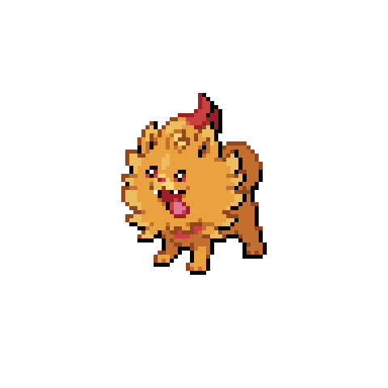
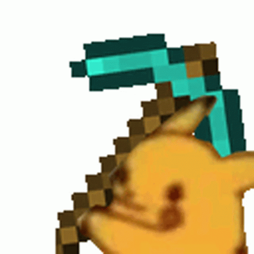
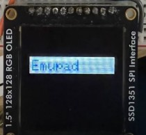
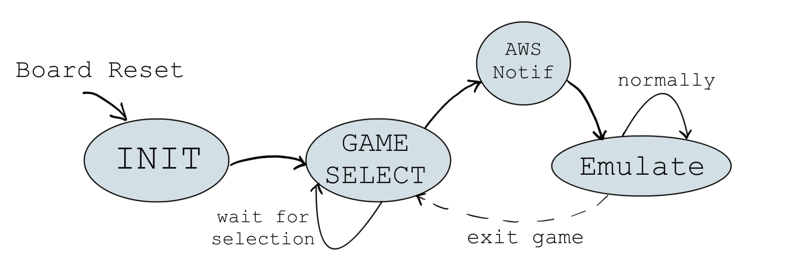
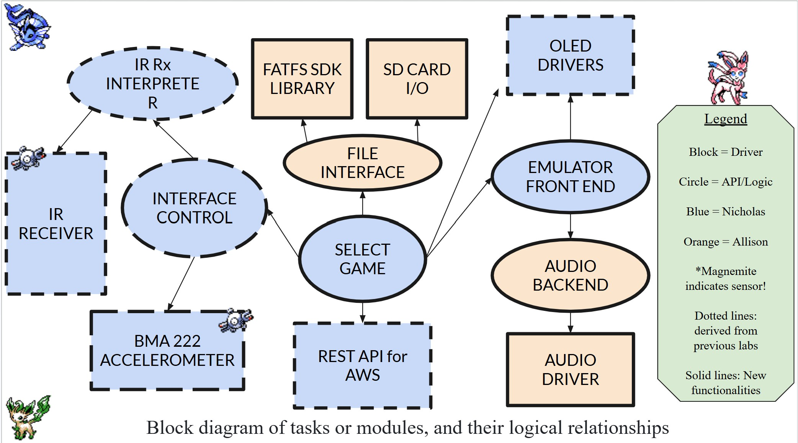
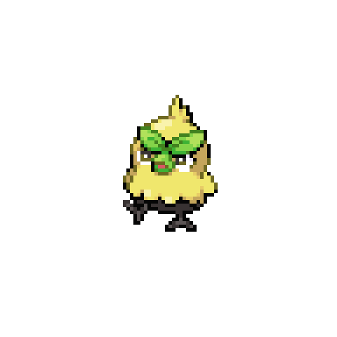

Emupad
EEC172 Final Project
Nicholas Bianez and Allison Kuan | EEC172 WQ26
Description
The Emupad is a specialized handheld system that brings Game Boy and Game Boy Color emulation to the CC3200 Launchpad. By leveraging the Walnut CGB open-source emulator (with Peanut GB as a high-performance fallback), the project bridges the gap between 1980s hardware and modern IoT capabilities.
Technical Overview
To overcome the CC3200's 256KiB SRAM limitations, we implemented an external 64MiB Micro SD interface for ROM storage. User input is handled via an AT&T IR Remote, providing a full suite of Game Boy controls and a custom numerical-key ROM selection interface.
- Display: A 128x128 Adafruit OLED acts as a viewport into the native 160x144 Game Boy resolution, physically shifted via the onboard BMA222 accelerometer.
- Connectivity: Integrated AWS IoT Core services to trigger email notifications upon ROM selection.
- Performance: While hardware bottlenecks and SPI communication overhead currently limit output to ~5 FPS, the architecture is designed for future DMA (Direct Memory Access) optimization to target 30 FPS.
Note: While time and hardware constraints limited audio and high-speed ROM read-back during this phase, the system provides a robust framework for theoretical 60 FPS handheld emulation.
Video Demo

Demonstration of ROM selection via IR remote and accelerometer-based screen orientation.
Design
Functional Specification
The Emupad operates through a hierarchical control flow, transitioning from hardware initialization to a user-driven game selection menu, and finally into the core emulation loop.
Initialization
The system begins by initializing all peripheral drivers and hardware. This includes configuring BMA222 accelerometer parameters, clearing the OLED display, and resetting the terminal. The final step involves parsing the SD Card to index all available ROM files.

Initial boot displays the project logo and usage pictographics.
Game Selection
Users navigate a list of ROMs discovered on the SD card, with each page displaying up to 8 titles.
- Navigation: Uses the IR remote to scroll and traverse pages.
- Selection: A "double-press" logic is implemented; the first press highlights the number entry for feedback, and the second confirms the selection. Pressing "0" allows the user to scroll to the next page.
- Data Handling: Once confirmed, the target filename is stored and the stage concludes.
Game Choice Notification
Upon selection, the system initializes the emulator core. Simultaneously, an AWS IoT Core update is triggered, publishing the current game state to the cloud to keep remote dashboards or logs in sync with the local device.
Emulation Loop
The core loop attempts to target 60 FPS to match the Game Boy's native ~59.7 FPS timing. Due to the high CPU overhead of the CC3200 and memory bandwidth limitations, the system focuses on maintainable stability over speedup features.

Figure 1: Functional Block Diagram of Task Modules and Logical Relationships
System Architecture
The system architecture integrates the CC3200’s ARM Cortex-M4 core with high-speed SPI for the OLED, the SD Host controller for ROM retrieval, and AWS IoT Core for system-level notifications.

Figure 2: Architectural Overview of Hardware Interconnects
Control Interface
Interprets real-time data from the BMA222 and IR Receiver. Tilt data and remote button presses are mapped to Game Boy registers and passed directly to the emulation front-end.
Game Manager
Orchestrates hardware setup, the UI state machine, and AWS triggers. It implements a dynamic frame-timing loop to stabilize framerates based on processing overhead.
File Interface
Utilizes FatFS and CC3200 SDK disk libraries to manage I/O with the SD Card. This interface handles the retrieval of large ROM binaries and persistent save data.
Emulation Core
Powered by Walnut CGB to support both GB and GBC instruction sets. This module manages the OLED line-buffer drawing and memory-mapped I/O for the virtual hardware.
Audio Backend (Conceptual)
Planned integration with the TLV320DAC3100 to synchronize audio samples with CPU cycles. While not implemented due to time constraints, the architecture supports an I2S-based audio pipeline.
System Implementation
IR Receiver & Command Interpreter
The input system utilizes a Vishay TSOP 3xx IR Receiver. We implemented an IR Rx Interpreter that captures pulses from the TSOP's output voltage and decodes them via an interrupt-driven routine. For our primary controller, the AT&T S10-S3 Remote (TV Code 1012), the system successfully interprets the NEC Protocol to extract command and address data. While certain proprietary buttons remain for future decoding, the core control interface queues these IR commands and maps them directly to the emulator’s key-state register.
BMA222 Accelerometer & Tilt Mapping
To handle spatial input, the onboard BMA222 Accelerometer communicates over I2C. We focused strictly on gravitational data to detect tilt angles. To minimize compute overhead, we implemented a non-interpolated linear approximation of arcsin, producing an angle within ~1° of accuracy. This angle is processed through a mapping function (accounting for angle wrap) that translates physical orientation into 6 distinct tilt states for both roll and pitch, defining the forward-facing orientation relative to the Launchpad's USB connection.
Disk I/O & FAT-FS Integration
Storage is handled via an external Adafruit Micro SD breakout using the SDIO/SDHost protocol. We integrated the FAT filesystem and Disk I/O libraries provided by the CC3200 SDK to enable byte-level file access. This "File Interface" layer is critical for fetching ROM data dynamically and managing persistent Save Data (SRAM) between gaming sessions, effectively overcoming the internal memory limitations of the microcontroller.
OLED Driver & Draw Optimization
The display stack utilizes the SSD1351 128x128 OLED. We adapted the Adafruit libraries into a custom C driver, replacing Arduino-specific SPI calls with high-performance CC3200 SPI drivers. To improve redraw speed, we implemented bulk transfers and explored DMA (Direct Memory Access). While theoretical clock speeds of 20MHz suggest much higher throughput, these optimizations were vital for maintaining the display's stability during the emulator's heavy compute cycles.
Unified Control Interface
The Control Interface serves as the software glue, integrating both remote inputs and accelerometer tilt data. It maintains a command queue for the IR interpreter and provides utility functions that the Game Manager calls on every frame. This ensures that screen shifting (the "viewing window" logic) and button presses are synchronized perfectly with the emulation loop.
Audio Backend & Driver (Design Phase)
The planned audio system was designed to interface with the TLV320DAC3100 via I2C. We identified compatible drivers that would have required minimal modification to work with the Walnut CGB audio interface. However, this feature was strategically cut to avoid further taxing the CC3200's 80MHz CPU, ensuring that all available cycles were dedicated to stable gameplay and video rendering.
Challenges

OLED SPI Throughput & Draw Latency
A primary bottleneck was the redraw rate of the 128x128 OLED. Each full redraw requires writing 32KiB (256Kib) to the device. At a 20MHz clock speed, a theoretical maximum of 80FPS should be achievable. However, due to DMA complications and the intensive frame computation time, we were unable to reach these speeds. While frame interlacing and further redraw optimizations could have enabled a "2x speedup" feature, the final implementation was constrained to ~5FPS.
80MHz CPU vs. GBC Optimization
The 80MHz clock speed of the CC3200 faced significant challenges emulating the 8.389MHz Game Boy Color. Because the original GBC was so tightly optimized, a single frame of emulation on our hardware took 100–200ms. This alone limited the framerate to 10FPS; when paired with SPI communication overhead, the performance solidified at ~5FPS. Transitions to more performant engines like Peanut GB or faster microcontrollers would be required to reach the native 60FPS target.
SRAM Constraints & Stringent Management
The 256KiB of available SRAM was almost entirely utilized, leaving only 16KiB unallocated for TI-RTOS functions. We utilized -O2 optimization during compilation just to fit the code alongside data. While a 32KiB ROM could fit in SRAM for testing, larger games like Pokemon Crystal (8MiB) exceed the available space by 32x. This forced a dependency on the SD Card for ROM I/O, further impacting the emulator’s performance.
SD Card I/O & Signal Integrity
We encountered several hardware-level issues with the SD Card interface, including driver hangs and corrupted ROM data. Resolution: Physical interference was mitigated by shortening lead wiring and lowering the clock speed, while driver hangs required a hardware power cycle to resolve. Unfortunately, persistent ROM data corruption issues remained unresolved within the project's final window.
Two-Week Development Timeline
The most significant hurdle was the strict 2-week deadline. This timeline had to cover the hardware build, Proposal/BoM documentation, demonstration slides, and website development. Due to these constraints, several planned features (including the audio backend, frame interlacing, and full DMA optimization) had to be cut to ensure a stable, functional demonstration.
Future Work

Render Speed Optimization
To eliminate the drawing bottleneck, the next phase involves implementing DMA (Direct Memory Access) for SPI transfers. This would allow the game manager to compute the next frame in parallel with the current frame's transmission to the OLED. Theoretically, this could push the interface to 160FPS, though a stable 60FPS is the practical target. Additionally, exploring line interleaving and redundant draw skipping could further optimize throughput.
Emulator Logic & Alignment
We observed that every fourth frame computes ~4x faster than others, suggesting memory alignment issues or periodic overhead in the emulation loop. Investigating this anomaly could stabilize frame times and bring GBC games closer to 60FPS. For standard Game Boy titles, transitioning to the Peanut GB engine (which has been proven on similar microcontrollers) would likely provide the performance overhead needed for high-speed emulation.
Proprietary Protocol Decoding
The current interface is limited by the documented NEC protocol of the AT&T S10-S3 remote. Future work includes reverse-engineering the proprietary protocol used by the remote's navigation (arrow) keys. Unlocking these "reserved" keys would allow for a significantly more intuitive user experience, replacing the current mapping with native directional control.
SD Card Data Integrity
Resolving the ROM data corruption is a high priority. At startup, binary data currently disagrees with expected values, preventing larger ROMs from loading correctly. We suspect either driver-level timing issues or file corruption during the SDIO fetch. Debugging this interface is the final step required to support arbitrary ROM sizes and complex titles.
Bill of Materials
| Material Name | Price | Qty | Purpose |
|---|---|---|---|
| CC3200 Launchpad | $66.00* | 1 | Main MCU |
| (Sensor 1) BMA222 Accelerometer | [Included]* | 1 | Screen Orientation |
| (Sensor 2) IR Receiver & components | $1.41* | 1 | Remote Input |
| 128x128 SPI OLED | $39.95* | 1 | Display Output |
| IR Remote | $9.99* | 1 | User Control |
| Micro SD Breakout | $3.50 | 1 | SD Host Interface |
| 64MB Micro SD Card | $3.50 | 1 | ROM Storage |
| Adafruit TLV320DAC3100 Mono Codec | $6.95 | 1 | Audio Processing** |
| 4Ω 2.5W Speaker | $4.30 | 1 | Sound Output** |
| Total Price (Excluding Provided) | $7.00 | ||
* Materials highlighted in grey are provided by EEC 172 material fee.
** Component was not implemented for final checkoff/demo; intended as a stretch goal.